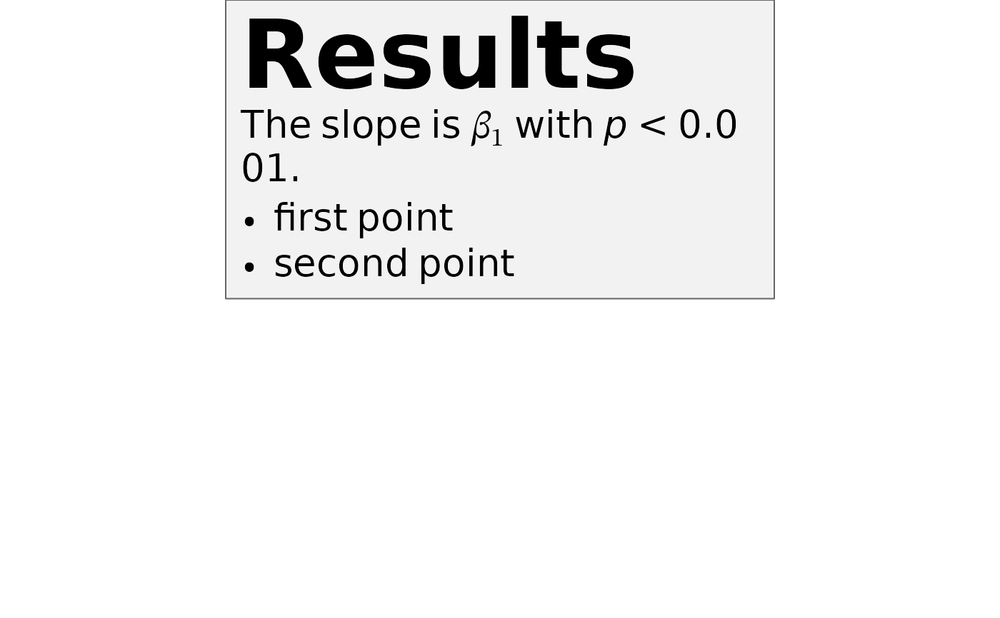

Lays markdown out as a block document — headings, paragraphs, lists
(including GFM task lists), block quotes, code blocks, tables,
horizontal rules and images — inside an optional padded, filled and
bordered box. Prose wraps to the requested width, and $...$
math is typeset by MicroTeX as usual. All the inline formatting
markdown_grob understands, including the inline HTML
subset, works inside every block.
Arguments
- md
Character string of markdown.
- x, y
Position of the box in the parent viewport.
- width
Width of the box, including
margin.NULLsizes the box to its content, so nothing wraps — useful where the available width is not known, as in a ggplot2 theme element.- height
Fixed height, or
NULL(default) to take whatever height the content needs.- hjust, vjust
Justification of the whole box about
xandy.- halign
Horizontal alignment of blocks within the box:
0left (default),0.5centred,1right.- valign
Vertical alignment of the content when
heightleaves room to spare:1top (default),0bottom.- padding, margin
A
unitof length 1 or 4 giving top, right, bottom and left. Padding is inside the box, margin outside it.NULL(default) takes them from the stylesheet'sbodyrule, and is zero if that says nothing.- box_gp
Graphical parameters for the box itself, e.g.
gpar(fill = "grey95", col = "black").NULL(default) takes the fill frombody { background }and the border frombody { border }, and draws no box if neither is set.- r
Corner radius; a non-zero value draws a rounded box.
NULL(default) takes it frombody { border-radius }.- style
Appearance of the blocks: a
markdown_styleobject, CSS text, or a path to a.cssfile.NULL(default) useslatex_options("markdown_style")if set, and the built-in defaults otherwise.- name
Optional grob name.
- gp
Graphical parameters for the text.
fontsizealso sets the scale for block spacing and list indentation, andcexmultiplies it as elsewhere in grid.- vp
Optional viewport. Supplying one replaces the viewport built from
x,y,width,height,hjustandvjust, so those are then ignored.
Details
Where markdown_grob flattens everything into a single
run, this stacks one grob per block. That is what makes headings, list
indentation, block-quote rules and background fills possible:
MicroTeX has no concept of any of them, and its line breaking does not
reach inside the cells it uses for list and table layout.
Two consequences worth knowing. Table cells and code lines are not
wrapped, so a wide table overflows rather than reflowing. And list
items are stacked here rather than handed to MicroTeX's
itemize, which is what gives them a proper hanging indent.
An image on a line of its own is drawn as a raster, scaled to fit the column but never enlarged past its natural size (pixels are read at 96 dpi). PNG needs the png package and JPEG needs jpeg, both Suggests: when the reader is not installed, the file is missing, or the format is anything else, the image degrades to its alt text. An image within a sentence stays inline, where only its alt text survives.
The layout is computed at draw time, so an open device is required —
which is what lets a relative width and the measured height of
the text resolve against the viewport the box is actually drawn in.
Styling
Appearance comes from a small CSS cascade. style sets the house
style for the whole document, by tag:
markdown_box_grob(md, style = markdown_style(
h1 = md_style(color = "steelblue", font_size = 2),
blockquote = md_style(border_left = "3px solid grey60")
))The same thing written as CSS, which style also takes directly,
as text or as the path to a .css file:
markdown_box_grob(md, style = "
h1 { color: steelblue; font-size: 2rem }
blockquote { border-left: 3px solid grey60 }
")To style one chunk rather than every block of a kind, wrap it in a
<div> carrying a class or a style. Leave
blank lines around the tags — that is what makes CommonMark parse
the markdown between them instead of treating the whole thing as raw
HTML:
<div class="note">
## This heading only
</div>Inline runs take class as well as style on a
<span>. See markdown_style for the tag names, the
supported properties and how the cascade resolves.
Examples
# \donttest{
md <- paste(
"# Results", "",
"The slope is $\\beta_1$ with *p* < 0.001.", "",
"- first point", "- second point",
sep = "\n"
)
grid::grid.newpage()
grid::grid.draw(markdown_box_grob(
md,
width = grid::unit(4, "in"),
padding = grid::unit(8, "pt"),
box_gp = grid::gpar(fill = "grey95", col = "grey40")
))

# }